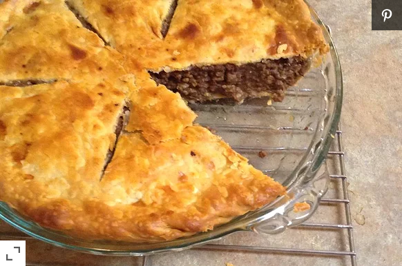

Meatpie

Description
Homemade pie made with babushka love and care.
Ingredients
- 1 medium potato, peeled and cubed
- ½ pound ground beef
- ½ pound ground pork
- ⅓ clove garlic, chopped
- ½ cup chopped onion
- ¼ cup water
- ½ teaspoon mustard powder
- ½ teaspoon dried thyme
- ¼ teaspoon ground cloves
- 1 teaspoon salt
- ¼ teaspoon ground black pepper
- ¼ teaspoon dried sage
- 1 (15 ounce) package refrigerated pie crusts
Directions
- Step 1
- Preheat the oven to 425 degrees F (220 degrees C). Place the potato in a saucepan with enough water to cover. Bring to a boil, and cook until tender, about 5 minutes. Drain, mash, and set aside.
- Step 2
- Meanwhile, crumble the ground beef and pork into a large saucepan, and add the garlic, onion and water. Season with mustard powder, thyme, cloves and salt. Cook over medium heat, stirring to crumble the meat and mix in the spices, until the meat is evenly browned. Remove from the heat, and mix in the mashed potato.
- Step 3
- Place one of the pie crusts into a 9 inch pie plate. Fill with the meat mixture, then top with the other pie crust. Prick the top crust a few times with a knife to vent steam. Crimp around the edges using the tines of the fork, and remove any excess dough. Cover the edges of the pie crust with aluminum foil.
- Step 4
- Bake for 25 minutes in the preheated oven, or until the crust has browned. Serve by itself, or with a beef gravy.
Go to main menu